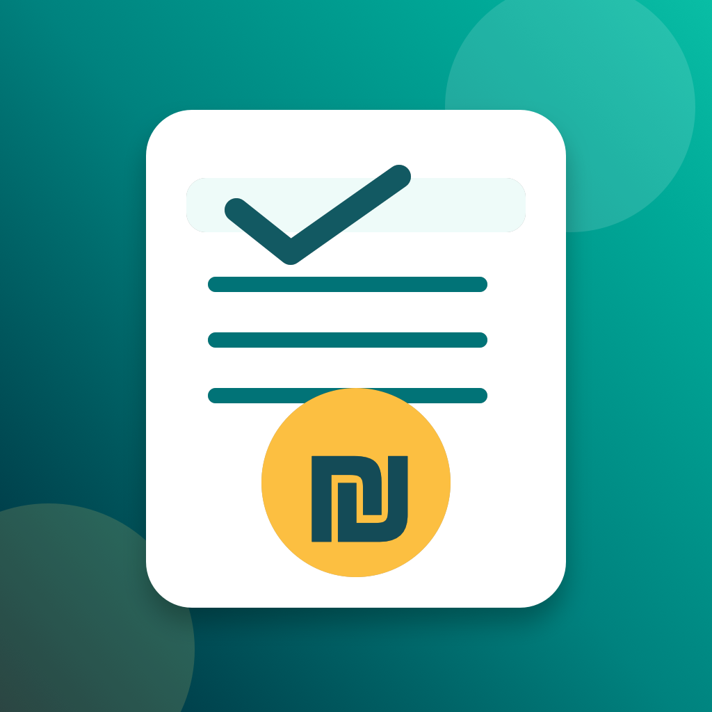

Business / receipts
ReceiptIL
ReceiptIL היא אפליקציית iPhone לעוסקים קטנים בישראל: יצירת קבלות, הפקת PDF, שליחה ללקוח ב-WhatsApp או email ומעקב שנתי פשוט. היא מתאימה לעצמאים שרוצים כלי זול, נקי ומהיר בלי מערכת כבדה.
- יצירת קבלות ו-PDF מהטלפון
- שיתוף מהיר ללקוח ב-WhatsApp או email
- תקופת ניסיון ורכישה חד-פעמית לשימוש מלא